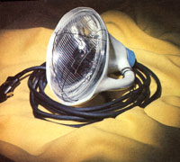
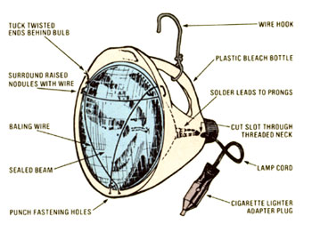
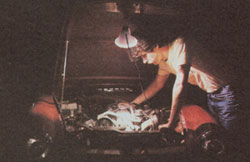

The last time I burned out one low beam of my automobile's four-headlight system, I promised myself I'd find some use for the still-functional high beam of the half-expired bulb. Consequently, for the price of a few minutes' assembly time and a couple of dollars' worth of parts, I built a powerful-as well as portable-trouble-and-search lamp that plugs right into the cigarette lighter socket in my car.
The entire project required only an empty plastic one-gallon bleach bottle, my salvageable sealed beam (as you probably know, the outer lights in a "quad" arrangement have both high and low filaments), 15 feet of household lamp cord, about three feet of baling wire, a small amount of electrical solder, and a cigarette lighter adapter plug (the part is Radio Shack No. 274-331, which I purchased locally for 99 cents).
First, I fashioned a funnel from the top part of the Clorox jug by cutting all the way around the container just above its label. Then I temporarily placed the headlight snugly into the plastic cup with the top of the bulb's face in the upright position, closest to the jug's handle. There are three raised nodules on the glass of the sealed beam-unevenly spaced, but close to 2, 6, and 10 o'clock-and I marked their positions on the lip of the funnel.
After removing the lamp, I took an awl and punched six holes through the jug, at points about half an inch on each side of the three marks and an inch back from the container's cut edge. Next, I fastened the adapter plug to one end of the lamp cord, and stripped one-half inch of insulation from the two leads at the other end. A sealed unit has three prongs on its back one for the high beam, one for the low beam, and one ground. After plugging the adapter into my car's cigarette lighter (and making sure, of course, that the exposed wire ends weren't touching), I placed the two leads alternately against varying pairs of the three prongs till I found the combination that made the bulb light . . . and soldered the wires securely to their proper terminals.
With that done, I passed the adapter plug and cord through the funnel and out by way of the bottle's neck, then set the sealed beam in place. To secure the bulb in its plastic holder, I clipped off a 24-inch length of baling wire and-feeding it from the inside-threaded it through one of the flank holes, back into the hole next to it, and across the face of the bulb to the second set of openings. The idea is to string the wire on both sides of each bump and through the three pairs of holes to make a triangular pattern, as shown in the illustration. Finally, I twisted the free ends of the wire neatly together near the edge of the bulb's face, and tucked the tips between the lamp and the plastic where they're least likely to catch on clothing or fingers.
The space behind the lamp, in the narrow part of the funnel, can provide a good storage bin for the power cord when the light isn't being used. I merely cut a slot into the threaded por tion of the neck, large enough to allow the lamp cord to pass through, and I can then twist the bottle cap in place to lock the wire at whatever length is required for the job at hand. By removing the cap completely, I'm able to stuff the wire and the plug into the plastic funnel . . . or I can leave the lid on and let just the adapter protrude from the lamp assembly. (Any more than 15 feet of cord, though, won't easily fit inside the holder.)
To make my scrap trouble light just a little more versatile, I took the remaining 12 inches of baling wire and made a small hook-which fits loosely around the jug handle-to hang it up by. This sliding loop will hold the light downward at almost any angle I need when working under the hood of a car.
Quite frankly, I'm pretty proud of my new "invention". Now, rather than ending up on the scrap heap, an otherwise useless auto bulb is ready to serve as a high-powered, broad-beam, hands-off trouble light . . . for only a fraction of the cost of an equivalent ready-made unit!
|
 |
 |
 |